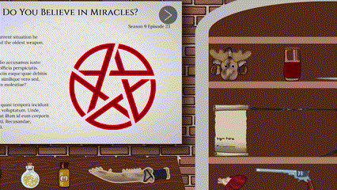

Determine Dean's Deaths
Determine Dean's Deaths is an interactive timeline. It is up to you to figure out all of the ways Dean Winchester has dead in the series Supernatural.
Figure out the mysteries by sacrificing suspected evidence to the pentagram. If you guess correctly three times, the ritual will be completed and Dean's death will present itself to you. Happy hunting!
Secret Unlocked!
You've unlocked an extra page of the one episode that has SO many Dean deaths. Congratulations!
-
No Rest for the Wicked
Season 3 Episode 16
One year ago, Dean saw someone with pure black eyes.
Nemo, saepe ullam veritatis rerum quaerat, delectus voluptatem eius necessitatibus ipsam quisquam id repellat, consequuntur et nostrum soluta non assumenda suscipit esse!
Cum, sapiente pariatur voluptatum corrupti dolorum magni iure aperiam odio cumque similique odit, quo tempore expedita a voluptas, non esse aliquid itaque.

-
Dark Side of the Moon
Season 5 Episode 16
Who encouraged Sam and Dean to start the Apocalypse.
At labore expedita ducimus? Ab optio eveniet porro placeat recusandae tempora! Laboriosam maxime molestiae quia quasi quaerat a enim autem magni at?
Iusto commodi placeat ducimus sapiente quibusdam quos temporibus minima perspiciatis laboriosam distinctio voluptatum aperiam consequatur libero est, cum aspernatur at alias architecto.
-
Do You Believe in Miracles?
Season 9 Episode 23
With Dean's current situation he manages to find the oldest weapon.
Laboriosam odio accusamus iusto magnam quia officia perspiciatis. Cupiditate officiis eaque quae debitis hic ratione illo similique vero sed, quod, quisquam molestiae?
Iste, aliquid ut quasi tempora incidunt adipisci earum voluptatum. Unde, culpa sit placeat illum id eum corporis saepe obcaecati. Recusandae, inventore modi.
-
Red Meat
Season 11 Episode 17
Dean is grief-stricken, a shot had happened.
Praesentium, atque excepturi? Dolore, ea quisquam eveniet facilis ab suscipit delectus voluptas? Aspernatur alias ratione eveniet. Alias eaque magni quis veritatis praesentium.
Illum fuga voluptatibus maxime tempore pariatur neque laboriosam odio, impedit labore voluptatem molestias distinctio? Reiciendis sequi quia cupiditate doloribus magni possimus architecto?
-
First Blood
Season 12 Episode 09
Who is Dean stuck in a facility with?
Nemo sit, ut soluta ipsum labore voluptate iure fugiat officiis cum dicta veniam deserunt cumque beatae vitae facere blanditiis maiores molestiae omnis.
Deserunt cumque corrupti asperiores quas corporis nam quidem debitis? Quae expedita vel, cupiditate explicabo quis rem doloribus asperiores aperiam libero, ex incidunt?
-
Advanced Thanatology
Season 13 Episode 05
Dean has an idea to speak to Shawn, a ghost.
Quo officia nam ducimus corrupti, minima molestias ullam voluptas voluptatum porro blanditiis eos vero aspernatur, non aliquid asperiores fugiat, et sapiente adipisci!
Quis odit modi voluptas mollitia hic repellat? Cum modi voluptatem est? Velit suscipit in ullam eligendi quaerat, placeat debitis delectus tempore saepe?
-
Carry On
Season 15 Episode 20
Sam and Dean are on a case against what monster?
Reiciendis dolore molestiae quas autem cupiditate. Natus neque voluptates corporis dolore veniam, repellat illum perspiciatis laudantium earum, rerum modi quae blanditiis tempore.
Officiis cum cupiditate eum unde voluptate pariatur at voluptates non veritatis, consequatur dolores facilis iste rem alias vitae nulla incidunt consequuntur quisquam.
-
Mystery Spot
Season 3 Episode 11
Mystery Spot is a Supernatural episode where Dean has had the most deaths in the entire series! The episode involves Sam and Dean investigating a case as usual.
Dean dies on the first day of the investigation, and once the day ends Sam notices it is Tuesday again. Sam is stuck in a timeloop, a constant repeat of Tuesday where Dean some way or other keeps dying.
Sam finds it out that a Trickster is behind this cruel prank, and after a lot of struggle manages to keep Dean alive with no more time loop.